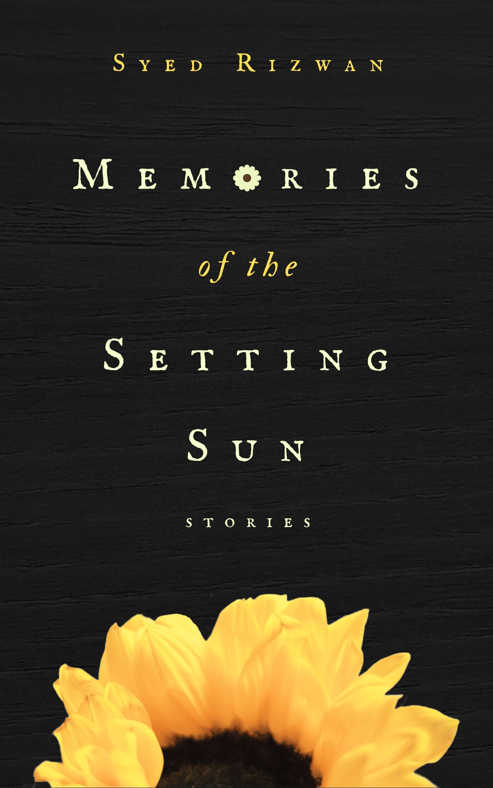

Short fiction · 2026
Memories of the Setting Sun
So come back memories.
In these six stories, people stand at the edge of transformation: an old man mourning the love of his life, a woman trapped between memory and oblivion, a recent widow shaped by poverty and social prejudice, a child confronting the bewildering world of adults, and others whose lives are marked by longing, sacrifice, cruelty, and hope.
About the book
Those who remain behind.
Rooted in the rhythms of rural life and rich in atmosphere, Memories of the Setting Sun is a raw yet profound meditation on memory, mortality, and the enduring bonds that survive even when time threatens to erase them.
These are stories of those who remain behind—those who carry the light of vanished days, their scars and their mementoes, and turn them into lamps with which to wander the long tunnels of memory.
From the book
“The month of May brought forth the scorching sun and ripe mangoes... In summer, the soil would form huge cracks and clods.”
Find the book
Choose your copy.
Memories of the Setting Sun is available as a Kindle eBook and as an author-signed copy.
The book